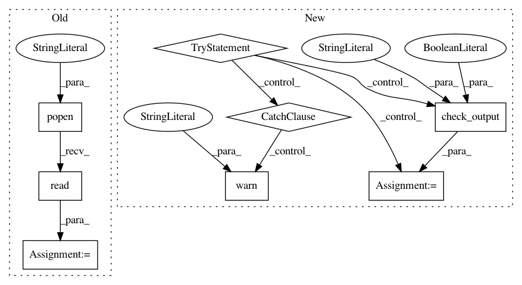

85da4149f4100ca0aab1257311a277dcd2e11e9e,autokeras/utils.py,,get_device,#,41
Before Change
// TODO: could use gputil in the future
device = "cpu"
if torch.cuda.is_available():
smi_out = os.popen("nvidia-smi -q -d Memory | grep -A4 GPU|grep Free").read()
// smi_out=
// Free : xxxxxx MiB
// Free : xxxxxx MiB
// ....
After Change
// TODO: could use gputil in the future
device = "cpu"
if torch.cuda.is_available():
try:
// smi_out=
// Free : xxxxxx MiB
// Free : xxxxxx MiB
// ....
smi_out = subprocess.check_output("nvidia-smi -q -d Memory | grep -A4 GPU|grep Free", shell=True)
print(smi_out)
except subprocess.SubprocessError:
warnings.warn("Cuda device successfully detected. However, nvidia-smi cannot be invoked")
return "cpu"
visible_devices = os.getenv("CUDA_VISIBLE_DEVICES", "").split(",")
if len(visible_devices) == 1 and visible_devices[0] == "":
visible_devices = []
visible_devices = [int(x) for x in visible_devices]
In pattern: SUPERPATTERN
Frequency: 3
Non-data size: 8
Instances
Project Name: jhfjhfj1/autokeras
Commit Name: 85da4149f4100ca0aab1257311a277dcd2e11e9e
Time: 2018-11-11
Author: lin.yang@tamu.edu
File Name: autokeras/utils.py
Class Name:
Method Name: get_device
Project Name: jsalt18-sentence-repl/jiant
Commit Name: b99870ac55f3773ff2cd59fc298f9a4f987589da
Time: 2018-06-29
Author: elliepavlick@gmail.com
File Name: src/main.py
Class Name:
Method Name: main